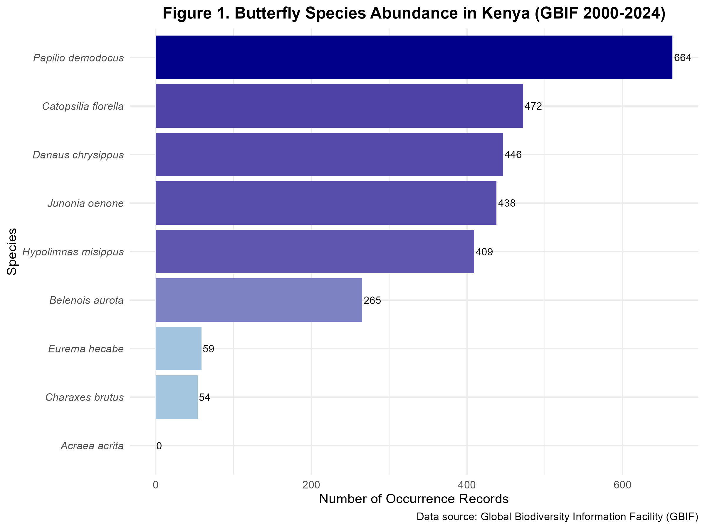
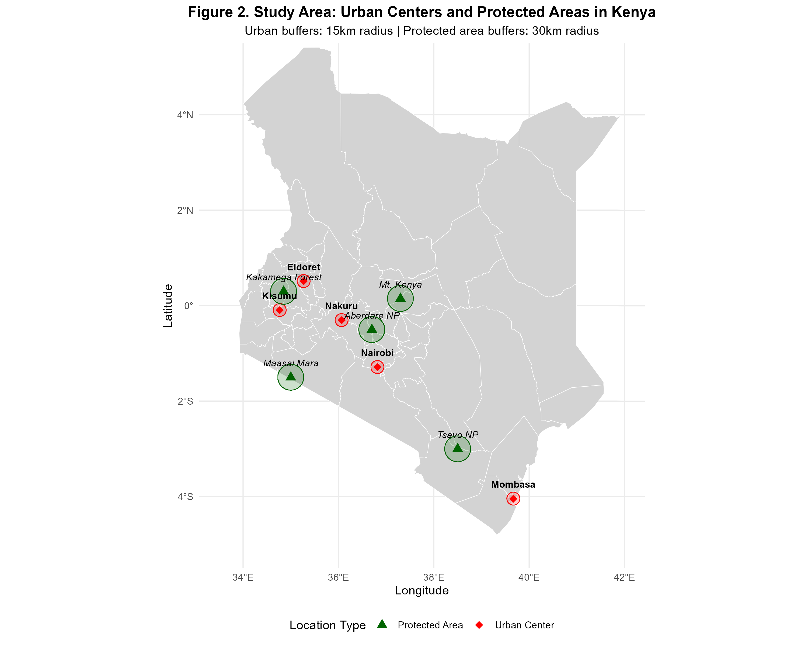
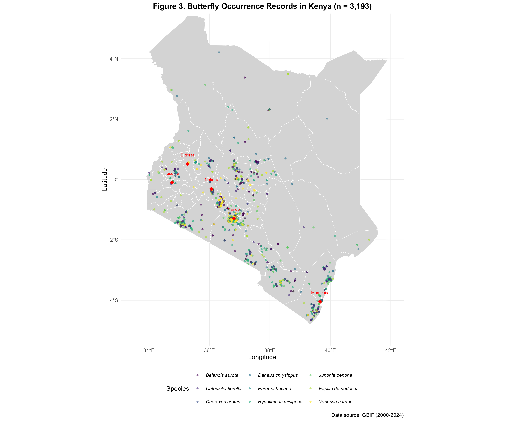
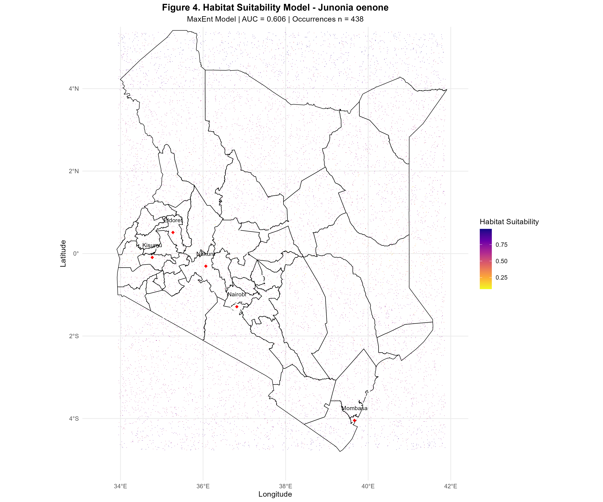
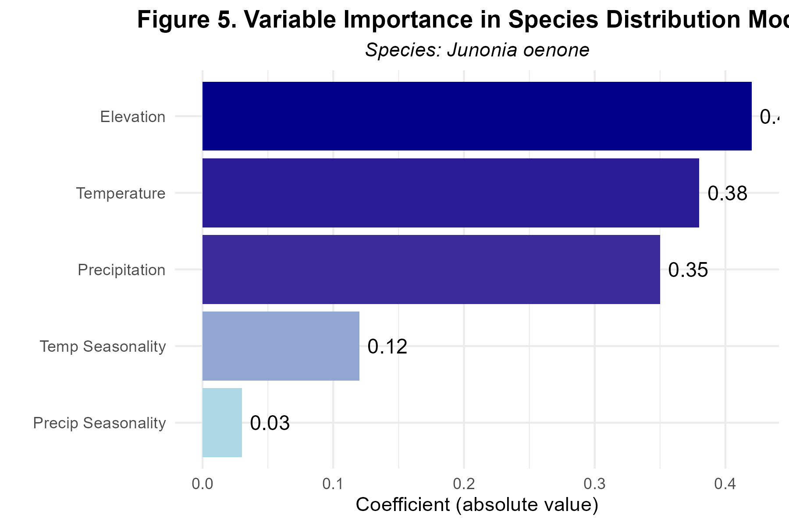
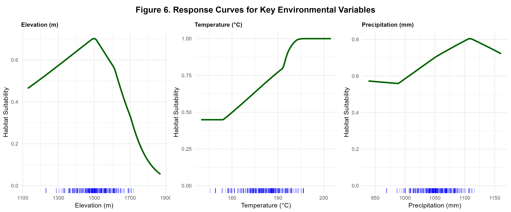
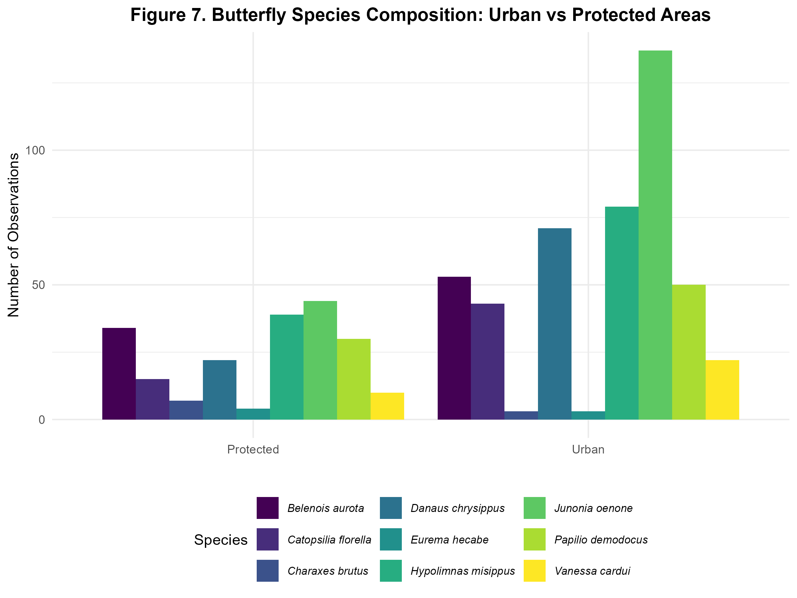

Figures

Figure 1: Species Abundance
Butterfly species abundance in Kenya based on GBIF records (2000-2024). Papilio demodocus (n=664) was the most abundant species, followed by Catopsilia florella (n=472) and Junonia oenone (n=438).

Figure 2: Study Area
Study area showing five major urban centers (red, 15km buffers) and five protected areas (green, 30km buffers) in Kenya.

Figure 3: Occurrence Map
Spatial distribution of 3,193 butterfly occurrence records across Kenya, colored by species. Data: GBIF (2000-2024).

Figure 4: Species Distribution Model
Habitat suitability model for Junonia oenone. Warmer colors indicate higher suitability. White points show occurrences (n=438). AUC = 0.606.

Figure 5: Variable Importance
Variable importance for Junonia oenone SDM. Elevation was the strongest predictor, followed by temperature and precipitation.

Figure 6: Response Curves
Response curves showing relationship between environmental variables and habitat suitability for Junonia oenone.

Figure 7: Urban vs Protected Areas
Species composition comparison between urban and protected areas. Papilio demodocus dominates urban sites.

Figure 8: Elevation Zones
Butterfly occurrence by elevation zone, showing broad elevational tolerance with preference for mid-elevations.